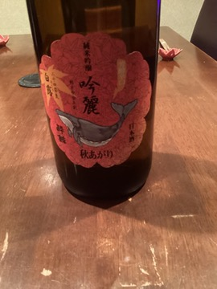
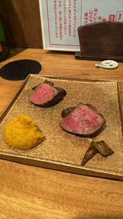
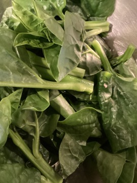

トップ > ブログ
酒匠が選ぶ日本酒の話題や、店主が仕入れる旬の食材、毎月29日限定「肉会」のレポートなど、饗応元の日々をお届けします。

夏を越して熟成した「秋あがり」の一本が入荷。酒匠がこの時季ならではの一杯をご紹介します。

炙り、握り、旬野菜のサラダ仕立て。毎月29日だけの黒毛和牛コースの様子をご紹介します。

つる紫や里芋など、季節ごとの野菜を店主自らが目利きして仕入れる理由をお話しします。
接待・記念日・少人数の会食まで。ご予約はWEBまたはお電話（075-600-0511）にて承っております。